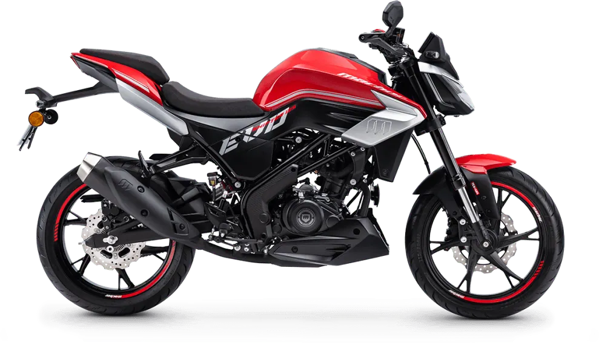
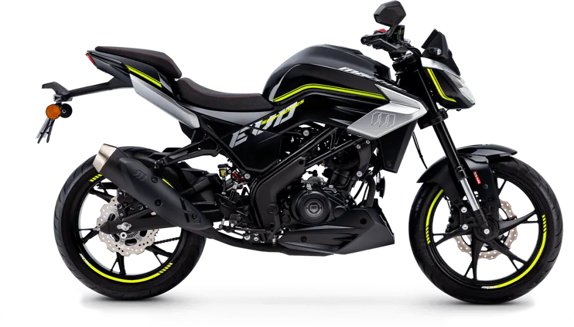
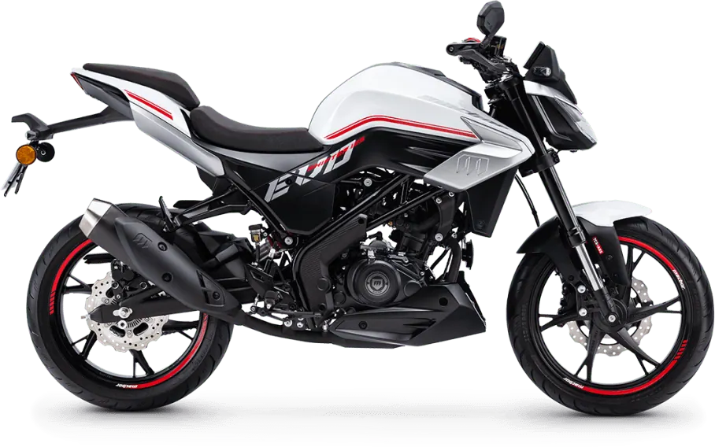
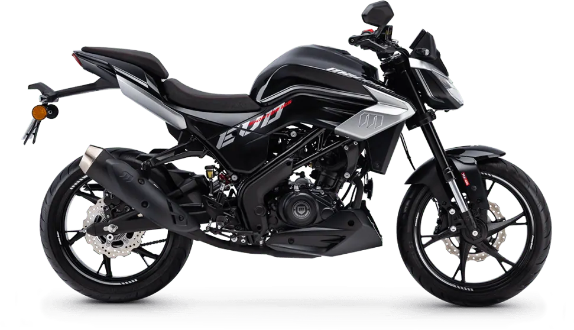

Macbor
Stormer R
B·A1 125 cc · Deportivas
Propuesta de OpsPilot para Expomoto Córdoba, en revisión. No es la web oficial: expomotocordoba.es




Ligera, viva, siempre lista para moverse al ritmo del asfalto. La Shifter 125 EVO te recuerda que la ciudad no se recorre… se conquista .
Es para quienes no buscan solo movilidad, sino un estado de ánimo. Para quienes creen que la juventud es una actitud, no una edad. Para quienes entienden que, cuando el carácter es auténtico, el camino nunca se acaba .
La Shifter 125 EVO se presenta completamente renovada, y lo hace reivindicando con fuerza su ADN: un diseño made in Barcelona , cuidado al milímetro y con unos acabados que marcan diferencia dentro del segmento de las motos 125 urbanas. Mantiene la esencia de una naked ágil y urbana , pero ahora con una presencia más sofisticada y una personalidad todavía más marcada. Ligera, reactiva y con mucho carácter, es la compañera perfecta tanto para el día a día como para moverte por la ciudad con estilo propio.
Su motor monocilíndrico de 125 cc, con 15 CV y homologación Euro 5+ , ofrece el máximo rendimiento permitido para el carnet A1 o B. Gracias a la refrigeración líquida y al eje de equilibrado, mantiene un comportamiento suave y refinado incluso en uso intensivo. El nuevo cuadro TFT a color de 5″ con conectividad mirroring mediante Carbit Ride permite integrar tu smartphone sin distracciones.
En el apartado de control, incorpora ABS desconectable con dos modos: Full ABS o ambas ruedas en OFF; para adaptar la frenada al entorno y al estilo de cada piloto. El TCS (control de tracción) , también desconectable, aporta un plus de seguridad en superficies de baja adherencia.
Su horquilla invertida de 37 mm y el monoamortiguador trasero trabajan para ofrecer estabilidad y confianza en conducción urbana. Los frenos de disco (260 mm delante y 240 mm detrás) proporcionan una frenada firme y progresiva. Los neumáticos de mayor sección refuerzan la sensación de precisión y aplomo.
El diseño evoluciona con líneas más agresivas, detalles mejor resueltos y una calidad percibida superior, reforzando su carácter atrevido. Completa su equipamiento con Full LED , tomas USB y USB‑C , cámara frontal y TPMS para el control de presión de neumáticos.